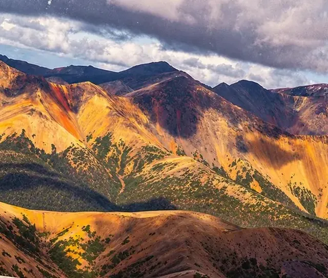
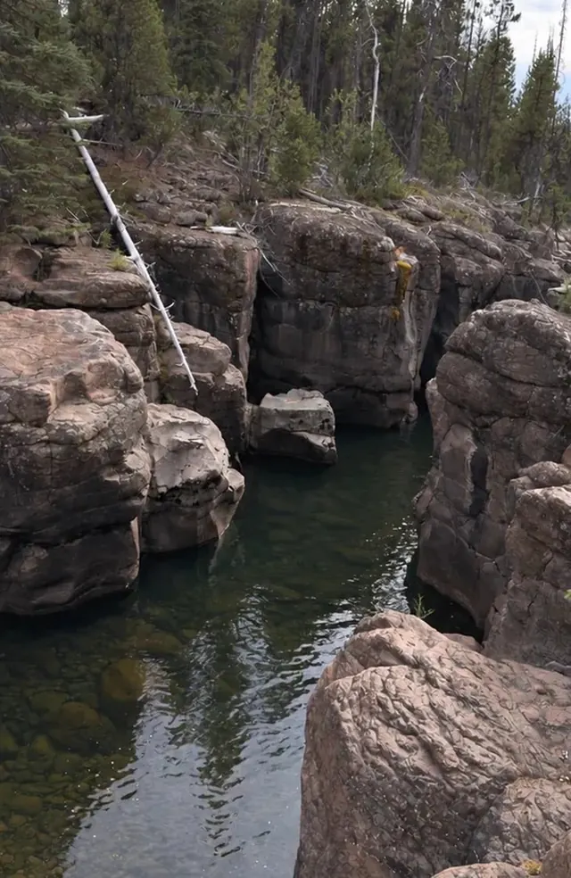
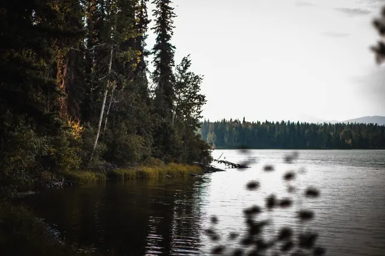
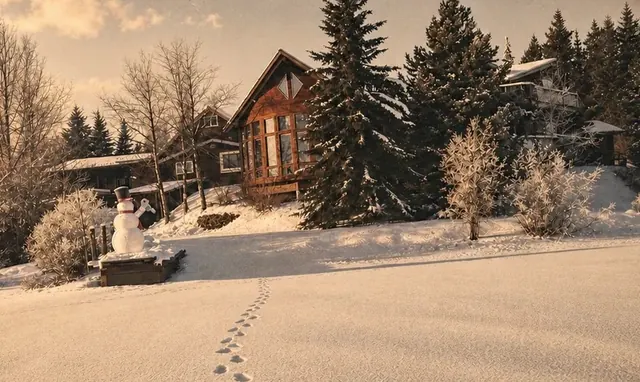
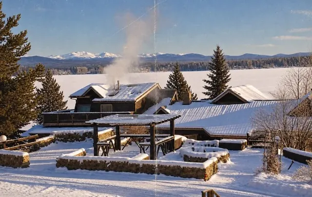

Hike through forests, valleys and alpine country. Adventure in every direction.



When the lake freezes…
A whole new way to experience Anahim Lake and the Chilcotin.
Miles of backcountry once the snow is down.

Drill a hole, set up and wait it out. Check the ice before you walk on it.

When conditions permit, there’s nothing quite like skating out on a frozen lake.
End of prototype · chapter 6 begins in this dusk blue